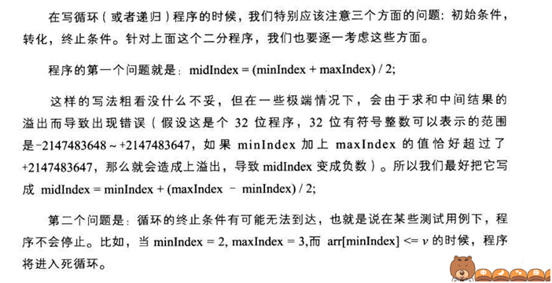

各种二分查找
给定一个有序（不降序）数组arr。
1、求任意一个i使得arr[i]等于val，不存在则返回-1
2、求最小的i使得arr[i]等于val，不存在则返回-1
3、求最大的i使得arr[i]等于val，不存在则返回-1
4、求最大的i使得arr[i]小于val，不存在则返回-1
5、求最小的i使得arr[i]大于val，不存在则返回-1
一个错误的二分查找：
1 | int bisearch(int *arr, int b, int e, int val) |
下面通过构建测试用例来找出这个程序的问题
对于所有有效输入
在arr数组中查找元素val,对于问题123构建如下的测试用例。
| arr数组 | 找到 | 未找到 |
|---|---|---|
| 空集 | 不存在 | 1 |
| 1个元素 | 2 | 3 |
| 多个元素 | arr中含有一个val or 含有多个, and 位于arr开头,结尾,中间 4, 5, 6, 7, 8, 9 | 比最小的小:10; 比最大的大:11; 在范围内就是不含有: 12 |
构建测试用例
| No. | Sample |
|---|---|
| 1 | int a1[] = {}; cout << bisearch(a, 0, sizeof(a1)/sizeof(int)-1, 8) << endl; |
| 2 | int a2[] = {8}; cout << bisearch(a, 0, sizeof(a2)/sizeof(int)-1, 8) << endl; |
| 3 | int a3[] = {10}; cout << bisearch(a, 0, sizeof(a3)/sizeof(int)-1, 8) << endl; |
| 4 | int a4[] = {1,2,3,4,5,6,7,7,7,7,7}; cout << bisearch(a, 0, sizeof(a4)/sizeof(int)-1, 1) << endl; |
| 5 | int a5[] = {1,1,1,2,3,4,5,6,7,7,7,7,7}; cout << bisearch(a, 0, sizeof(a5)/sizeof(int)-1, 1) << endl; |
| 6 | int a6[] = {1,2,3,4,5,6,7,7,7,7,7,8}; cout << bisearch(a, 0, sizeof(a6)/sizeof(int)-1, 8) << endl; |
| 7 | int a7[] = {1,2,3,4,5,6,7,7,7,7,7,8,8,8,8}; cout << bisearch(a, 0, sizeof(a7)/sizeof(int)-1, 8) << endl; |
| 8 | int a8[] = {1,2,3,4,5,6,7,7,7,7,7,8,8,8,10,10,12}; cout << bisearch(a, 0, sizeof(a8)/sizeof(int)-1, 6) << endl; |
| 9 | int a9[] = {1,2,3,4,5,6,7,7,7,7,7,8,8,8,10,10,12}; cout << bisearch(a, 0, sizeof(a9)/sizeof(int)-1, 8) << endl; |
| 10 | int a10[] = {2,3,4,5,6,7,7,7,7,7}; cout << bisearch(a, 0, sizeof(a10)/sizeof(int)-1, 1) << endl; |
| 11 | int a11[] = {2,3,4,5,6,7,7,7,7,7}; cout << bisearch(a, 0, sizeof(a11)/sizeof(int)-1, 12) << endl; |
| 12 | int a12[] = {2,3,4,5,7,7,7,7,7}; cout << bisearch(a, 0, sizeof(a12)/sizeof(int)-1, 6) << endl; |
期望的测试结果
| No. | 问题1 | 问题2 | 问题3 |
|---|---|---|---|
| 1 | -1 | -1 | -1 |
| 2 | 0 | 0 | 0 |
| 3 | -1 | -1 | -1 |
| 4 | 0 | 0 | 0 |
| 5 | 0-2任意 | 0 | 2 |
| 6 | 11 | 11 | 11 |
| 7 | 11-14任意 | 11 | 14 |
| 8 | 5 | 5 | 5 |
| 9 | 11-13 | 11 | 13 |
| 10 | -1 | -1 | -1 |
| 11 | -1 | -1 | -1 |
| 12 | -1 | -1 | -1 |
对于上面那个错误程序：测试样例4进入死循环，经过分析发现，（来自编程之美）

也就是说一种情况下没有缩小范围导致。
对每一种情况都缩小范围，可以得到题目1的如下代码：可以通过全部测试样例
1 | //递归 |
然后：
1 | //第二题： |
对于4,5问题不存在找不到的情况，构建测试用例
| arr | val |
|---|---|
| 空集 | 任意1 |
| 1个 | 相等2; 大于3; 小于 4 |
| 多个 | 小于最小5; 等于最小 6; 在中间相等7 不等8; 等于最大 9; 大于最大10 |
| No. | Sample |
|---|---|
| 1 | int a1[] = {}; cout << bisearch(a1, 0, sizeof(a1)/sizeof(int)-1, 8) << endl; |
| 2 | int a2[] = {8}; cout << bisearch(a2, 0, sizeof(a2)/sizeof(int)-1, 8) << endl; |
| 3 | int a3[] = {10}; cout << bisearch(a3, 0, sizeof(a3)/sizeof(int)-1, 8) << endl; |
| 4 | int a4[] = {5}; cout << bisearch(a4, 0, sizeof(a4)/sizeof(int)-1, 8) << endl; |
| 5 | int a5[] = {3,5,6,7,7,7,8,8,8,8,12,18}; cout << bisearch(a5, 0, sizeof(a5)/sizeof(int)-1, 1) << endl; |
| 6 | int a6[] = {3,5,6,7,7,7,8,8,8,8,12,18}; cout << bisearch(a6, 0, sizeof(a6)/sizeof(int)-1, 3) << endl; |
| 7 | int a7[] = {3,5,6,7,7,7,8,8,8,8,12,18}; cout << bisearch(a7, 0, sizeof(a7)/sizeof(int)-1, 7) << endl; |
| 8 | int a8[] = {3,5,6,7,7,7,8,8,8,8,12,18}; cout << bisearch(a8, 0, sizeof(a8)/sizeof(int)-1, 9) << endl; |
| 9 | int a9[] = {3,5,6,7,7,7,8,8,8,8,12,18}; cout << bisearch(a9, 0, sizeof(a9)/sizeof(int)-1, 18) << endl; |
| 10 | int a10[] = {3,5,6,7,7,7,8,8,8,8,12,18}; cout << bisearch(a10, 0, sizeof(a10)/sizeof(int)-1, 20) << endl; |
| No. | 问题4 | 问题5 |
| :-: | :-: |
| 1 | -1 | -1 |
| 2 | -1 | -1 |
| 3 | -1 | 0 |
| 4 | 0 | -1 |
| 5 | -1 | 0 |
| 6 | -1 | 1 |
| 7 | 2 | 6 |
| 8 | 9 | 10 |
| 9 | 10 | -1 |
| 10 | 11 | -1 |
1 | //第四题 |